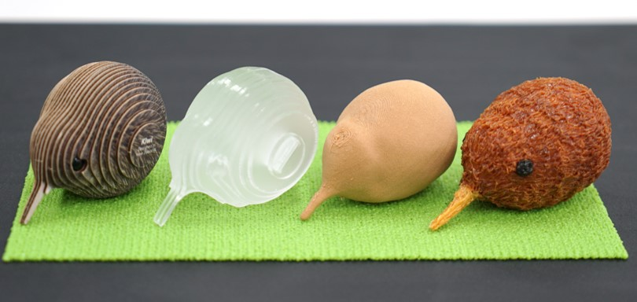
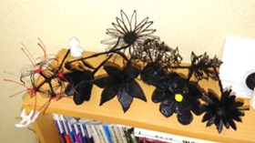

2018年度のまとめ（2019/03/31）
あっという間に助教の1年目が終わりました．そんなことをする柄でもないのですが，1年のまとめなどを書き連ねておきます．
研究業績 （2018/04～2019/03 のもの）
SCF2018にペーパー採択（共著）
CHI2019にペーパー採択（筆頭）
WISS2018にてデモ発表（筆頭＋共著で1件）
インタラクション2019にてデモ発表（筆頭）
投稿中の論文誌が1件あります．
数日後のとある国際会議にも投稿予定です（原稿はほぼ仕上がりました）．
ドラフト状態ですが，その投稿予定の研究の副産物を調査してもう1本書いています．
来年度も引き続き研究活動に励んで参ります．共著での投稿も増えてくると良いなぁ，と思っているのですが，あまり自分がやった研究感が得られないので複雑なところです．なので筆頭＆単著でやりたい放題やった1年となりました．共同研究はいつでも歓迎しております．
その他の活動
展示会「1kg展」に技術協力
日本顔学会 顔学フォーラム2018（実行委員）
CHI勉強会2018（東京会場の幹事）
あとは担当の授業などをこなしながら．
「1kg展」では，なにかと技術協力を頑張りまして，これ以降いろいろと取り上げていただく機会も増えました．感謝です．
数ヶ月間ずっと造形をしっぱなしぐらいのスケージュルだったのですが，おかげでいろいろと精神面が鍛えられました．最近では50時間ぐらいかかる造形を気軽にできるようになったり...
雑記
日々いろいろなことをやっているのですが，ほぼやった時点で満足してしまって発信できていないです．その一部を吐き出しておきます．
音楽
ギターを買いました．あとマルチエフェクタとシールドなんかも...いずれも安物ですが大変良いです．ギターはリアのピックアップをBill Lawrence L500に積み替えました．良く歪みます．ドラムを叩く機会もあったのでそっちの練習も（Silent Jealousyをひとつ）．ベースと新しいツインペダルが欲しいです．
造形
3Dスキャンしてもらったり，3Dプリントしてもらったりしました．ディジタルアルティザンさんや慶應大学田中研究室のみなさんのおかげでした．ありがとうございます．実物よりも良いです．

キーウィ
オリジナルは一番左端のやつで，ニュージーランドのおみやげに買ったものです．これをスキャンしてアクリルで作ってみたり，3Dプリンタ作ってみたり，3Dペンで描いてみたりしたのでした．
デモ発表
ブースの設営を必要以上に頑張りすぎてしまう．あといつもポスターが同じデザイン．
デモ発表時はポスター，動画，システム，造形例などを持参します．たまに，動画の再生位置を制御できるプレイヤーを実装していたりも（動画のシーンで説明するとき，さっと出せないとまごつくので）．オープンキャンパスのときは2つのブースを必死に回しておりました．3Dペンで作品を作ってもらって，その場で手もとを撮影してスライドショーする，っていうシステムを動かしていたり．
プラモデル
コロブキヤさんのメダロットプラモはとても良くできているのですが，特にティレルビートルの造形は素晴らしいです．こういうアンバランスさにロマンを感じます．アークDもいるので組みます．ちなみに，にわかですのでランナーから外して磨いて組み立てるぐらいしかできません．
vvvv
vvvvで生成した頂点群とそのまとまり（Bin）を与えると，その情報に従ったGcodeを吐き出してくれるようなプラグインを作りました．たんぽぽの作成時にちょっとだけ活躍しました．それ以外では，研究動画のためにvvvvを使っています．実写動画の中にちょっとしたアニメーションを挟んだりしているんです．
Repetier-hostのプラグイン
3Dプリンタを制御するソフトウェアとしてRepetier-hostを使っているのですが，どうやらこの中で動くプラグインがかけるらしいです．ということを知って，夢中になって実装していました．3DPen+3DPrinterでのシステムもここで実装．GIFはフリーハンドで描いた線をそのままGcodeにしてくれるもの．これ以外にも，造形開始ボタンを押すと適当な動画を探してきて再生するプラグインとか，造形に成功したGcodeのバックアップをとっておくプラグインとかいろいろ作りました．
OctoPrint
いまさらOctoPrintをいじりました．すごく便利．RaspberryPiに3Dプリンタをつないでおいてサーバ？化しています．ポートを開けておけば出先から自宅の3Dプリンタに造形キューを投げることもできます（あんまりこの使い方はしていない）．プラグインが充実しているのが良いですね．タイムラプスの撮影なども試しました．
門松
2019年になった際に3Dペンで描いたもの．竹の部分は3Dプリンタで作って，100均で買ったアクリル絵の具で着色．松の部分は，いつもの毛造形で作ったものを軽く変形させて表現．小さい頃に祖父と本物の門松を作ったりもしたので，意外に繊細なところまでこだわれたんじゃないでしょうか．すばらしい．
羊毛フェルト
WISSの共著で3Dプリンタに針を装着して羊毛フェルトをやる，という研究のお手伝いをしました．その際に，「自分もやっとかないといかんでしょ」と思って作りました．アンニュイさが表現されていてなかなか良いと思います．なお，パッケージとはぜんぜん違うようです．

3Dペンで花ばっかつくる
3Dペンのプロジェクトを始めたころに狂ったように作っていました．いろんな花を調べて花弁の構造を見てみるのですが，基本的に再現は難しいです．なので毎回同じようなものを作っているなぁ，と思ったあたりで我に返りました．
Grasshopper
この素晴らしいビジュアルプログラミング言語をひたすらいじりました．一部の研究は，Grasshopperが面白すぎてその勢いで始動しています．
スケッチ
研究アイディアをよくスケッチするのですが，気分転換に絵も描きます（模写ですが）．3Dペンで描こうと思ってその下描きをしたのですが，下描きのままほったらかしになってしまいました．小説もぜひ読んでいただければ．
2色造形
3Dプリンタを使い始めてかれこれ経ちますが，初めて2色造形にトライしました．割とすぐにコツを掴むことができ，現在執筆中の研究でも使いました．色が増える程度でしょ，と思っていましたが，いざ作ってみるとその見た目に相好を崩さざるを得ません．予算があったら，Geeetech A20Mあたりを導入してみたいです．
来年度以降は，こういう更新を想定してこまめにまとめておこうと思います．以上．